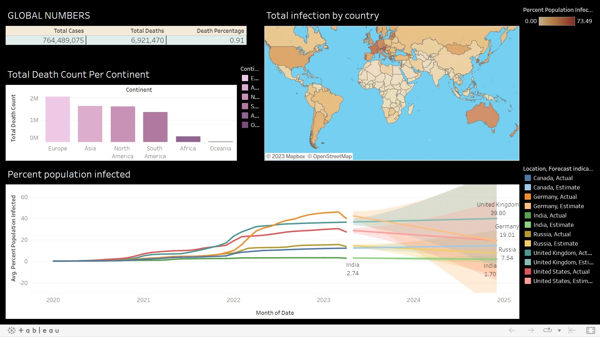

An Inspiration from ChatGPT
Introducing a revolutionary chat bot that combines financial analysis with weather updates and news alerts to help you make smarter investment decisions. Our bot, powered by live NSE data, can recommend whether it's a good or bad time to buy a stock, while also keeping you updated on the latest weather conditions and breaking news across various genres. And when you want to dive deeper into a specific news category, our bot can seamlessly navigate you to the BBC web news portal for a comprehensive view of the latest developments.

Chocolate Sales Analysis Using Power BI

The project involved utilizing Power BI to analyze sales data for chocolates. The data was obtained from a chocolate manufacturer and included details about sales by country, salesperson, product, and customer .
HR Analytics Dashboard Using Power BI

The project involved utilizing Power BI to analyze HR data. The data was obtained from a HR database and included details about Over all employee, attriation, attriation rate, active amployee and average age .

Data Exploration project in SQL Server using Covid 19 data set.

Let explore all of my tableau Dashboard projects

Customer Segmentation is one the most important applications of unsupervised learning. Using clustering techniques, companies can identify the several segments of customers allowing them to target the potential user base. In this machine learning project, we made use of K-means clustering which is the essential algorithm for clustering unlabeled dataset..

The Excel Dashboard for Chocolate Sales is a powerful tool that offers detailed analysis and visualization of chocolate sales data. It provides a range of features to enhance your understanding of sales trends, including dynamic category selection using slicers, integration of category selection with KPI titles, sorted country pivot data, a bubble chart for team performance, and a sleek formatting of slicers. With this dashboard, you can easily explore and interpret your chocolate sales data to gain valuable insights.